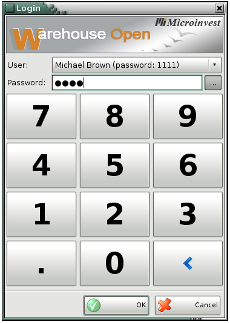

Logout
Use the Logout window to change the active user. Select a username from the User drop-down list and enter the corresponding password. Click the OK button to confirm.

The application recognizes the new active user and automatically turns on his settings.
�2006-2015 Microinvest, All rights reserved